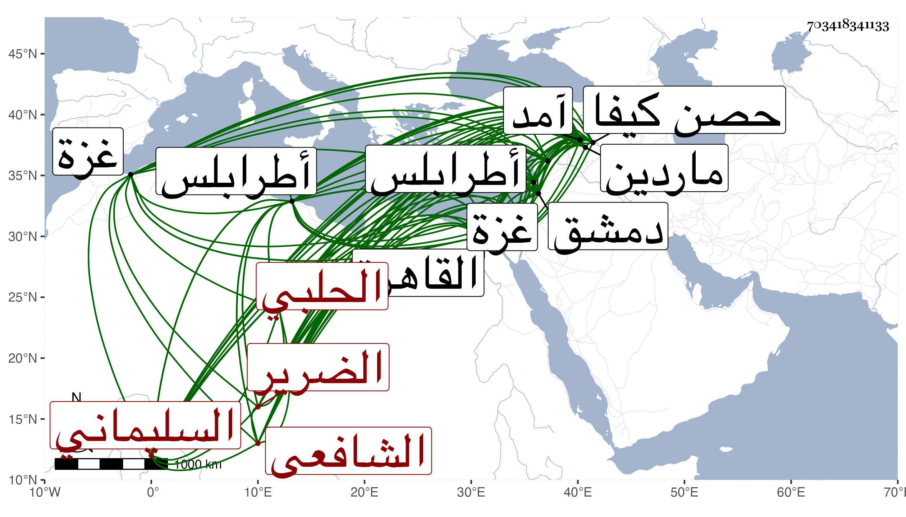

0902Sakhawi.DawLamic.ITO20230111-ara1.EIS1600.703418341133
Biography ID: 703418341133
أحمد بن رمضان بن عبد الله الشهاب السليماني ثم الحلبي الشافعي الضرير نزيل القاهرة ويعرف بالشهاب الحلبي . ولد تقريبا سنة ثمان وثمانمائة بالسليمانية بالقرب من آمد وانتقل منها في صغره فجود القرآن بعد أن حفظه على كل من عبد الله الشيرازي بحصن كيفا والعلاء علي بن أبي سعيد وابنة البرهان إبراهيم بماردين وابن شلنكار بعنتاب ، وتلا لعاصم والكسائي وابن عامر على البدر حسين الرهاوي بها ولأبي عمرو على عبيد الضرير ومحمد الأعزازي كلاهما بحلب ولعاصم على الشمس الحوراني بطرابلس وله ولابن عامر وغيرهما على الشمس بن النجار بدمشق وللكسائي على الشمس القباقبي بغزة وبالجامع الكبير على البرهان الكركي بالقاهرة وكذا جمع البعض بها على التاج بن تمريه وطاف سوى ما سلف من الأماكن كل ذلك مع ضرره الذي كان ابتداؤه في صغره من جدري عرض له وحافظته قوية قال لي أنه حفظ العمدة ومعالم التنزيل والشاطبيتين وألفية العراقي في الحديثية والحاوي والمنهاج الفرعيين وجمع الجوامع وألفية ابن مالك والحاجبية وجملة ولكن اشتغاله في غير القراآت يسير فأخذ في الفقه والعربية والتفسير وغيرها عن ابن زهرة بطرابلس وسمع عليه وعلى البرهان الحلبي والتاج بن بردس وابن ناصر الدين وابن العصياتي وطائفة وقطن القاهرة دهرا وقرأ على شيخنا من حفظه من أول البخاري إلى مواقيت الصلاة وأقرأ الطلبة وممن قرأ عليه الأمير يشبك الفقيه رأيته عنده وفي مجلس شيخنا كثيرا وكذا قرأ عليه ابن القصاص إمام الجيعانية ، وهو حسن الأبهة نير الشيبة كثير التودد زائد المقال له فهم في الجملة . ومات قريب الثمانين عفا الله عنه .
